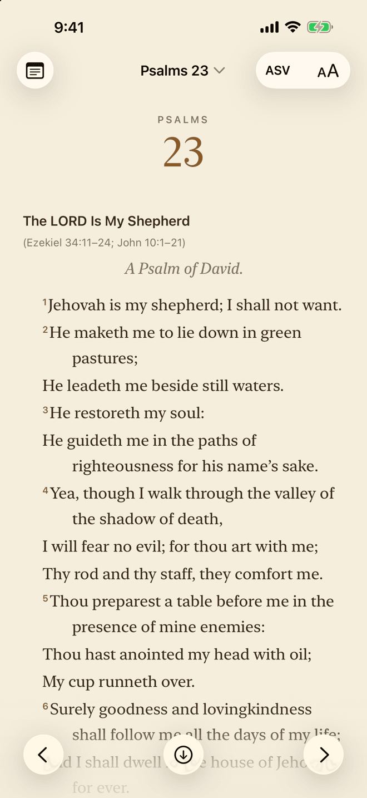
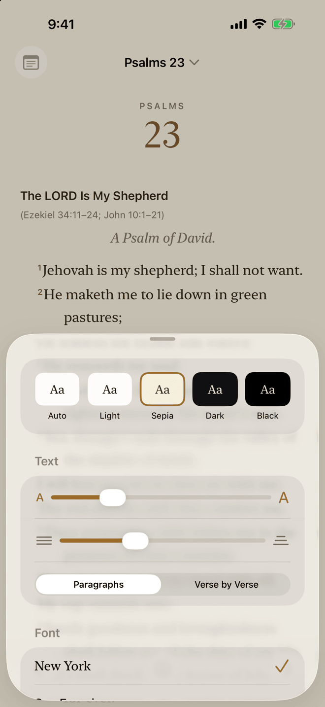

📖 Scripture Alone
A free, open-source Bible for iPhone, iPad and Mac. Three complete translations live on your device, so you can read, search, highlight and take notes anywhere in the world — with or without a connection.
Free forever. No ads, no trackers, no accounts. Built to help people study God's word and grow closer to Christ.
Available now
Everything here works today, on the device in your hand.
The American Standard Version, the Berean Standard Bible and the King James Version — all public domain, all stored on your device, with full-text search. No signal needed, anywhere in the world.
The words of Christ in red, section headings, poetry laid out as poetry, and footnotes a tap away.
Seven typefaces, adjustable size and line spacing, and five themes — Auto, Light, Sepia, Dark and Black. Read in paragraphs or verse by verse, with full Dynamic Type support.
Auto-scroll keeps the text moving at your pace and carries on into the next chapter — an accessibility feature for anyone who finds scrolling by hand difficult, or simply wants to read without touching the screen.
Type “jn 3 16” or “rom 8:28-39” to jump to a passage, or search for any word or phrase.
Highlight in five colors. Attach a note to one or more passages — a Sunday sermon on Romans 8:1–17, say — and see it inline beside the verse and gathered in the Notes panel.
Your highlights and notes follow you across iPhone, iPad and Mac through your own private iCloud. No account, no server — I never see your data.
Every line of code is public under the AGPL-3.0 license. Read it, check it, or build it yourself.
See it


Psalm 23 in the American Standard Version on the Sepia theme, and the reading options behind the Aa button.
On the way
Being built now, and not in the app yet. They'll ship when they're ready.
Make a beautiful image of a verse right on your device. Share links rebuild the image in the browser from the link itself — nothing is stored on a server.
Hear any chapter read aloud with the system voices, or hand it off to Mi Speaks for its Studio voices.
Cross-references, maps and timelines of the biblical periods, charts, and classic Reformed commentary — a toggle away when you want to dig deeper, out of sight when you just want to read.
Snap the sermon slide at church. On-device text recognition titles your note and links the passages it mentions.
We're requesting licenses from the publishers of the CSB, ESV, NKJV and NASB. Each will be added only if its license is granted.
Share a read-only copy of your notes and highlights with your family, or export them as a keepsake — a digital “Dad's Bible” to hand down.
Got Questions?
Yes. No ads, no in-app purchases, no subscriptions. Scripture Alone is free, and it will stay free.
None. There are no analytics, no trackers and no accounts. Your highlights and notes stay on your devices and sync only through your own private iCloud, which I can't see.
It's a careful, word-for-word translation in the public domain, so it can be given away freely — the Berean Standard Bible and King James Version are included for the same reason. Translations like the CSB, ESV, NKJV and NASB need publisher licenses, which we're requesting.
Yes. The full source is on GitHub under the AGPL-3.0 license.
Yes. When Scripture Alone arrives on the App Store, it will be available everywhere in the European Union, France included. The source code is open to everyone on GitHub today.
Privacy & security
No ads. No analytics. No third-party SDKs. Your notes travel only through your own iCloud.